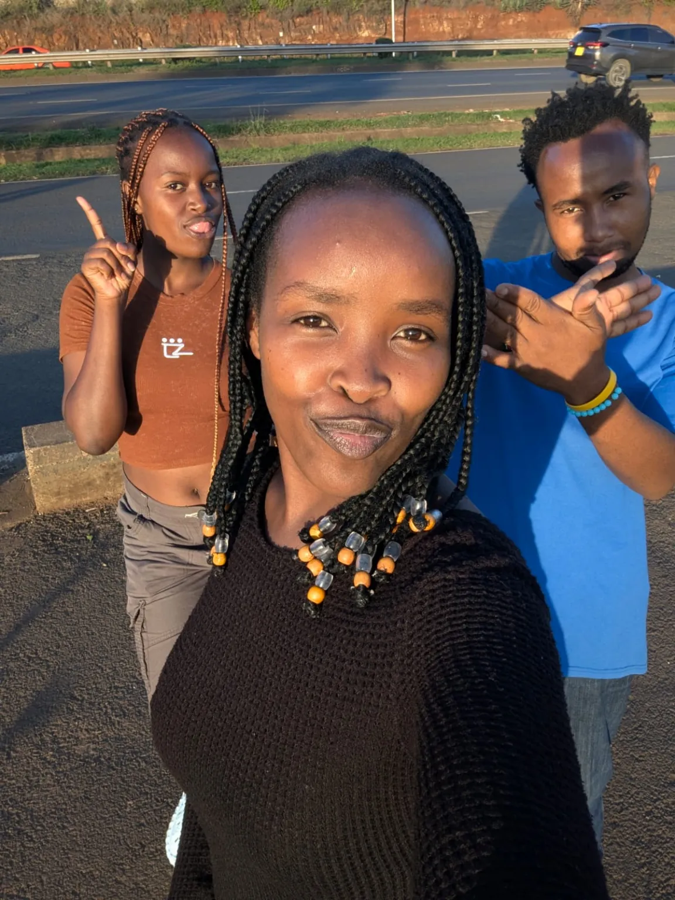

Skating
I enjoy skating as an active and enjoyable way to spend my free time.
Life beyond lectures
These are some of the activities I enjoy in my free time.
I enjoy skating as an active and enjoyable way to spend my free time.
Music is one of the ways I relax and enjoy my free time.
I enjoy discovering new ideas and exploring how technology can be used in everyday life.

A personal photo with friends. Publish this image only with the other people’s permission.